CG-GAMES101-现代计算机图形学入门-闫令琪（2）
目录
- 资源
- Lecture 05 Rasterization 1 (Triangles)
- Lecture 06 Rasterization 2 (Antialiasing and Z-Buffering)
- HW2
资源
Lecture 05 Rasterization 1 (Triangles)
Perspective Projection 透视投影
What’s near plane’s $l, r, b, t$ then?
那么，near 平面的 $l,r,b,t$ 是什么？
If explicitly specified, good
如果有明确规定，这很好
Sometimes people prefer: vertical field-of-view (fovY) and aspect ratio (assume symmetry i.e. $l = -r, b = -t$)
有时人们更喜欢：垂直视野和纵横比（假设对称性，即$l=-r,b=-t$）
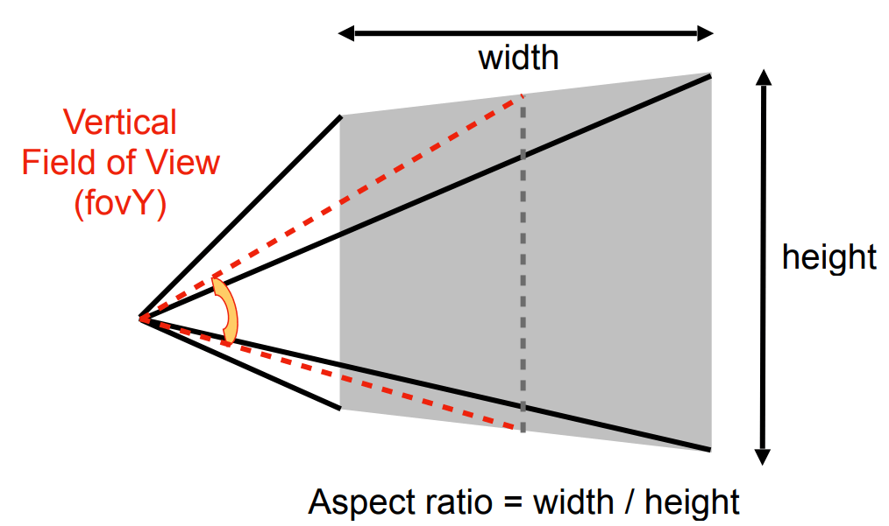
How to convert from fovY and aspect to $l, r, b, t$?
如何将垂直视野和纵横比转换为 $l,r,b,t$？
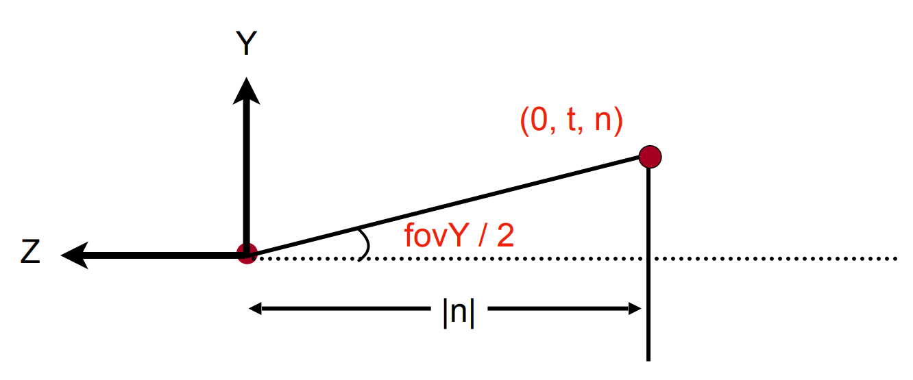
Canonical Cube to Screen 标准立方体到屏幕
What is a screen?
什么是屏幕？
An array of pixels
像素阵列
Size of the array: resolution
阵列大小：分辨率
A typical kind of raster display
一种典型的光栅显示器
Raster == screen in German
光栅 == 德语的屏幕
Rasterize == drawing onto the screen
光栅化 == 在屏幕上绘制
Pixel (FYI, short for “picture element”)
像素（仅供参考，“图像元素”的缩写）
For now: A pixel is a little square with uniform color
目前：像素是一个颜色均匀的小方块
Color is a mixture of (red, green, blue)
颜色是（红、绿、蓝）的混合物

Pixels’ indices are in the form of $(x, y)$, where both $x$ and $y$ are integers.
像素的索引采用 $(x, y)$ 的形式，其中 $x$ 和 $y$ 都是整数
Pixels’ indices are from $(0, 0)$ to $(\mathrm{width} - 1,\mathrm{height} - 1)$
像素的索引从 $(0, 0)$ 到 $(\mathrm{width} - 1,\mathrm{height} - 1)$
Pixel $(x, y)$ is centered at $(x + 0.5, y + 0.5)$
像素 $(x, y)$ 以 $(x + 0.5, y + 0.5)$ 为中心
The screen covers range $(0, 0)$ to $(\mathrm{width},\mathrm{height})$
屏幕覆盖范围从 $(0, 0)$ 到 $(\mathrm{width},\mathrm{height})$
Irrelevant to $z$
与 $z$ 轴无关
Transform in $xy$ plane: $[-1, 1]^2$ to $[0, \mathrm{width}] \times [0, \mathrm{height}]$
在 $xy$ 平面中变换： $[-1, 1]^2$ 到 $[0, \mathrm{width}] \times [0, \mathrm{height}]$
Viewport transform matrix:
视点转换矩阵：（缩放 + 平移，不管 $z$ 轴）
$M_{viewport}=\begin{pmatrix}\frac{width}2&0&0&\frac{width}2\\0&\frac{height}2&0&\frac{height}2\\0&0&1&0\\0&0&0&1\end{pmatrix}$
Drawing Machines 绘制仪器
- CNC Sharpie Drawing Machine 绘图机
- Laser Cutters 激光切割机
Different Raster Displays 不同于光栅显示
Oscilloscope
示波器
Television - Raster Display CRT
电视-光栅显示器 CRT
Frame Buffer: Memory for a Raster Display
帧缓冲区：光栅显示的内存
Flat Panel Displays
平板显示器
LCD (Liquid Crystal Display) Pixel
LCD（液晶显示器）像素
Principle: block or transmit light by twisting polarization
原理：通过扭曲偏振阻挡或透射光
Illumination from backlight (e.g. fluorescent or LED)
背光照明（例如荧光灯或 LED）
Intermediate intensity levels by partial twist
部分扭曲的中等强度水平
LED
阵列显示器
Light emitting diode array
发光二极管阵列
Electrophoretic (Electronic Ink) Display 电泳（电子墨水）显示器
- 刷新率低，不适合看视频
Rasterization: Drawing to Raster Displays 光栅化：图形到光栅显示
Triangles - Fundamental Shape Primitives 三角形-基本形状基元
Why triangles?
为什么是三角形？
Most basic polygon
最基本的多边形
Break up other polygons
分解其他多边形
Unique properties
独特的特性
Guaranteed to be planar
保证平面
Well-defined interior
明确的内部
Well-defined method for interpolating values at vertices over triangle (barycentric interpolation)
定义良好的三角形顶点插值方法（重心插值）

Input: position of triangle vertices projected on screen
输入：投影在屏幕上的三角形顶点的位置
Output: set of pixel values approximating triangle
输出：近似三角形的像素值集
A Simple Approach: Sampling 一种简单的方法：采样
Sampling a Function 对函数进行采样
Evaluating a function at a point is sampling.
在一点上评估函数就是采样。
We can discretize a function by sampling.
我们可以通过离散函数来采样。
|
Sampling is a core idea in graphics.
采样是图形的核心思想。
We sample time (1D), area (2D), direction (2D), volume (3D) …
我们采样时间（1D）、面积（2D）、方向（2D）和体积（3D）…
Define Binary Function 定义二值化函数: inside(tri, x, y)
Rasterization = Sampling A 2D Indicator Function 光栅化 = 对 2D 指示器函数进行采样
|
通过判断像素点是否在三角形内部来决定上色。
Inside? Recall: Three Cross Products!
判断像素点是否在像素点内部可以用向量叉积来表示。
Edge Cases (Literally) 边缘案例（字面意思）
Is this sample point covered by triangle 1, triangle 2, or both?
这个采样点是被三角形 1、三角形 2 覆盖，还是两者都覆盖？
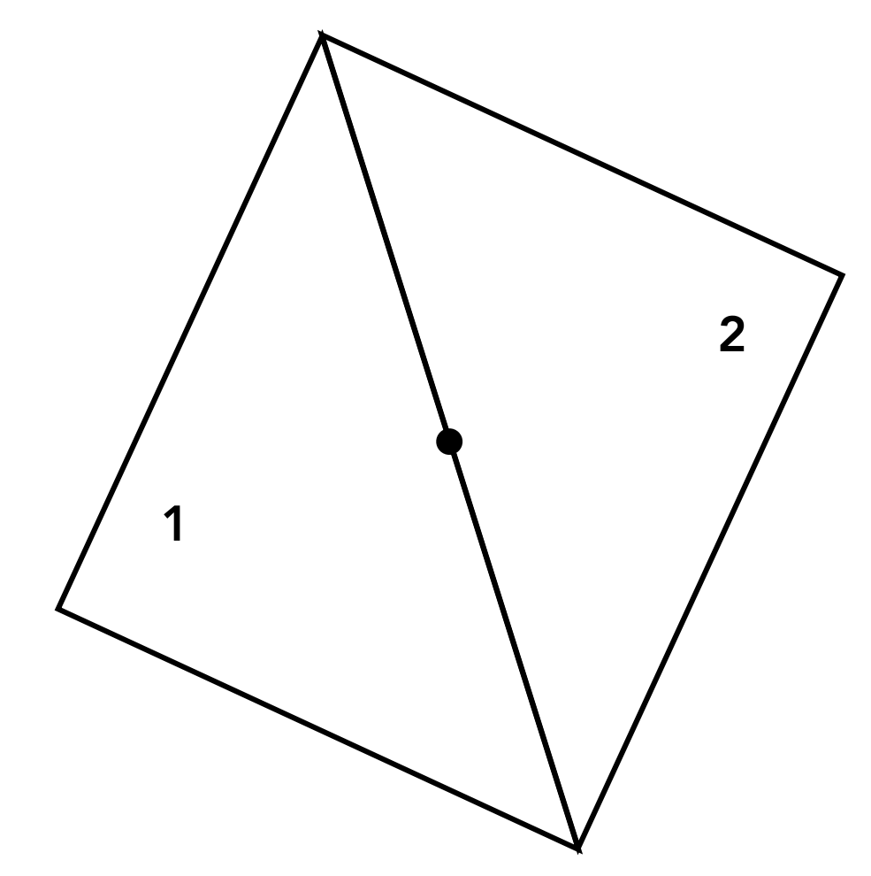
一般都是自定义。
Incremental Triangle Traversal (Faster?)
更快的判定点是否在三角形内部的算法：扫描线算法

Rasterization on Real Displays 真实显示器上的光栅化
Real LCD Screen Pixels (Closeup) 真实 LCD 屏幕像素（特写）

Notice R,G,B pixel geometry! But in this class, we will assume a colored square full-color pixel.
注意 R，G，B 像素的几何图形（绿色更密集，因为人眼对绿色更敏感）！但在这个课程中，我们将假设一个彩色正方形全色像素（像素为图形的最小单位）。
Aside: What About Other Display Methods?
旁白：其他显示方法呢？

彩色印刷：观察半色调图案
Assume Display Pixels Emit Square of Light
假设显示像素发射正方形光
LCD pixels do not actually emit light in a square of uniform color, but this approximation suffices for our current discussion
*LCD 像素实际上并不以均匀颜色的正方形发光，但近似值足以应付我们目前的讨论
Lecture 06 Rasterization 2 (Antialiasing and Z-Buffering)
上节课得出的三角形，会出现很多锯齿。
Sampling is Ubiquitous in Computer Graphics 采样在计算机图形学中无处不在
Rasterization = Sample 2D Positions 光栅化 = 采样 2D 位置
Photograph = Sample Image Sensor Plane 照片 = 样本图像传感器平面
- Video = Sample Time 视频 = 采样时间
Sampling Artifacts (Errors / Mistakes / Inaccuracies) in Computer Graphics 计算机图形学中的采样伪像（错误/错误/不准确）
- Jaggies (Staircase Pattern) （楼梯样式）
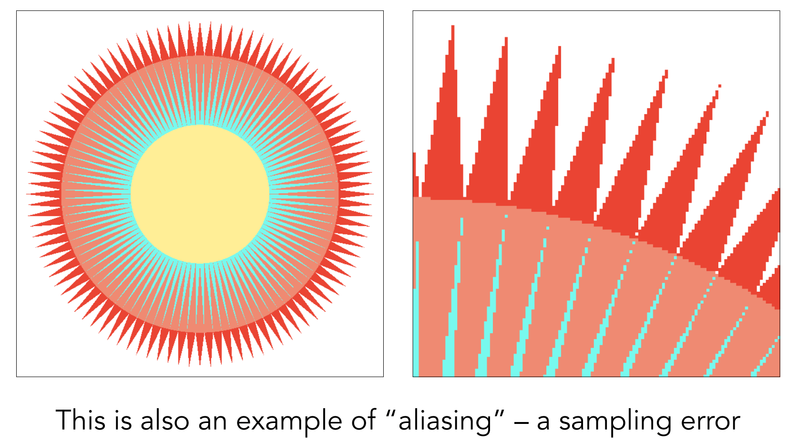
- Moiré Patterns in Imaging 成像中的莫尔条纹

- Wagon Wheel Illusion (False Motion) 车轮错觉（假动作）
- 车轮转太快的时候，看起来像反着转。
- Behind the Aliasing Artifacts 混叠伪影的背后
- Signals are changing too fast (high frequency), but sampled too slowly 信号变化过快（高频），但采样过慢
Antialiasing Idea: Blurring (Pre-Filtering) Before Sampling 抗锯齿思想：采样前模糊（预滤波）
- Rasterization: Point Sampling in Space 栅格化：空间中的点采样

Note jaggies in rasterized triangle where pixel values are pure red or white
注意光栅化三角形中像素值为纯红色或白色的锯齿
Rasterization: Antialiased Sampling 光栅化：抗锯齿采样
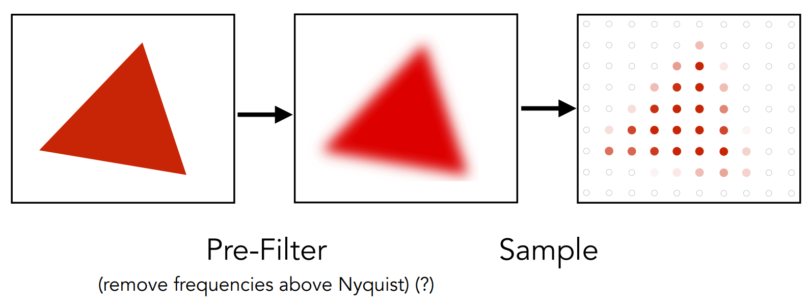
Note antialiased edges in rasterized triangle where pixel values take intermediate values 注意光栅化三角形中的抗锯齿边，其中像素值取中间值
Antialiasing vs Blurred Aliasing 消除混叠与模糊混叠
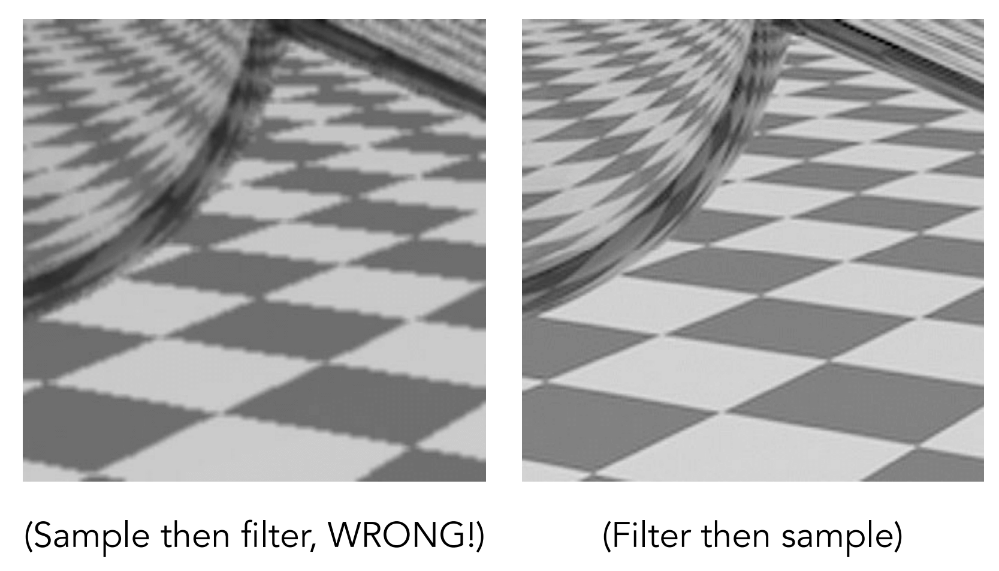
先采样再模糊是不对的！
But why? 但为什么呢？
- Why undersampling introduces aliasing? 为什么欠采样会引入混叠？
- Why pre-filtering then sampling can do antialiasing? 为什么先滤波后采样可以做抗锯齿？
Let’s dig into fundamental reasons 让我们深入探究根本原因
And look at how to implement antialiased rasterization 看看如何实现抗锯齿光栅化
Frequency Domain 频域
Fourier Transform Decomposes A Signal Into Frequencies 傅立叶变换将信号分解为频率（时域与频域相互转换）

Higher Frequencies Need Faster Sampling 更高的频率需要更快的采样

Low-frequency signal: sampled adequately for reasonable reconstruction
低频信号：充分采样以进行合理重建
High-frequency signal is insufficiently sampled: reconstruction incorrectly appears to be from a low frequency signal
高频信号采样不足：重建错误地显示为来自低频信号
Undersampling Creates Frequency Aliases 欠采样创建频率混叠
- High-frequency signal is insufficiently sampled: samples erroneously appear to be from a low-frequency signal
- 高频信号采样不足：样本错误地看起来来自低频信号
- Two frequencies that are indistinguishable at a given sampling rate are called “aliases”
- 在给定的采样率下无法区分的两个频率被称为“别名”
Filtering = Getting rid of certain frequency contents 过滤 = 去除某些频率内容

对图像进行傅里叶变换。
Filter Out Low Frequencies Only (Edges) 仅滤除低频（边缘）
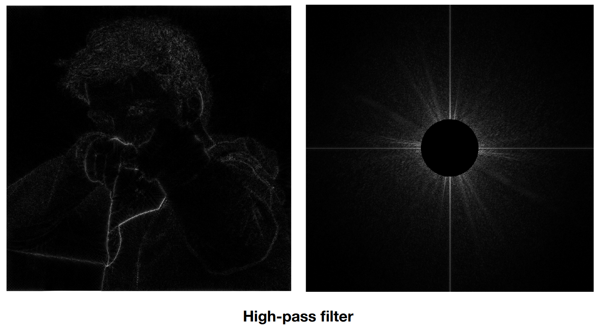
Filter Out High Frequencies (Blur) 滤除高频（模糊）

Filter Out Low and High Frequencies 滤除低频和高频
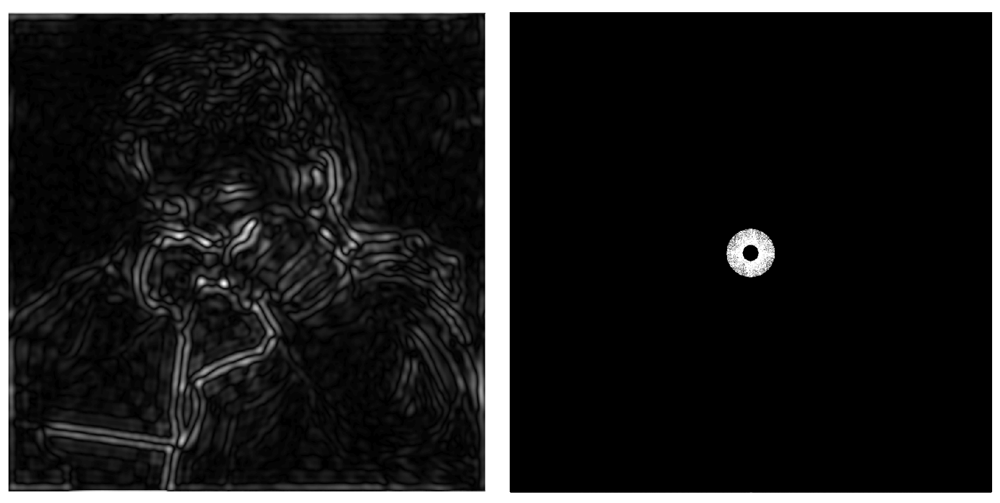
Filter Out Low and High Frequencies 滤除低频和高频
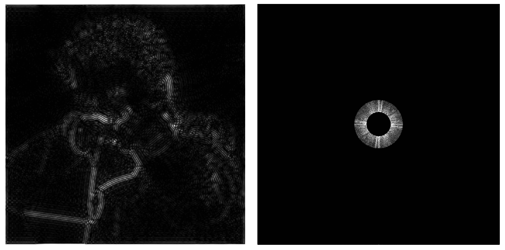
Filtering = Convolution (= Averaging) 滤波=卷积（=平均）
卷积定理
Convolution Theorem
空间域中的卷积等于频率域中的乘法，反之亦然
Convolution in the spatial domain is equal to multiplication in the frequency domain, and vice versa
Option 1: 选项 1：
Filter by convolution in the spatial domain
在空间域中通过卷积进行滤波
Option 2: 选项 2：
Transform to frequency domain (Fourier transform)
变换到频域（傅立叶变换）
Multiply by Fourier transform of convolution kernel
乘以卷积核的傅立叶变换
Multiply by Fourier transform of convolution kernel
转换回空间域（傅立叶逆变换）
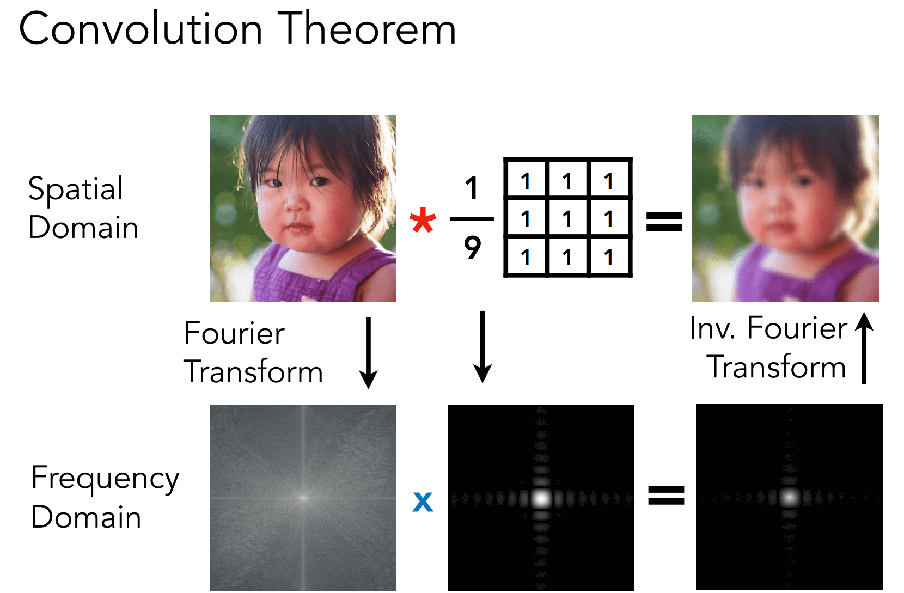
Box Function = “Low Pass” Filter
方框函数 = “低通”滤波器
Wider Filter Kernel = Lower Frequencies
较宽滤波器内核 = 较低频率
Sampling = Repeating Frequency Contents 采样 = 重复频率内容
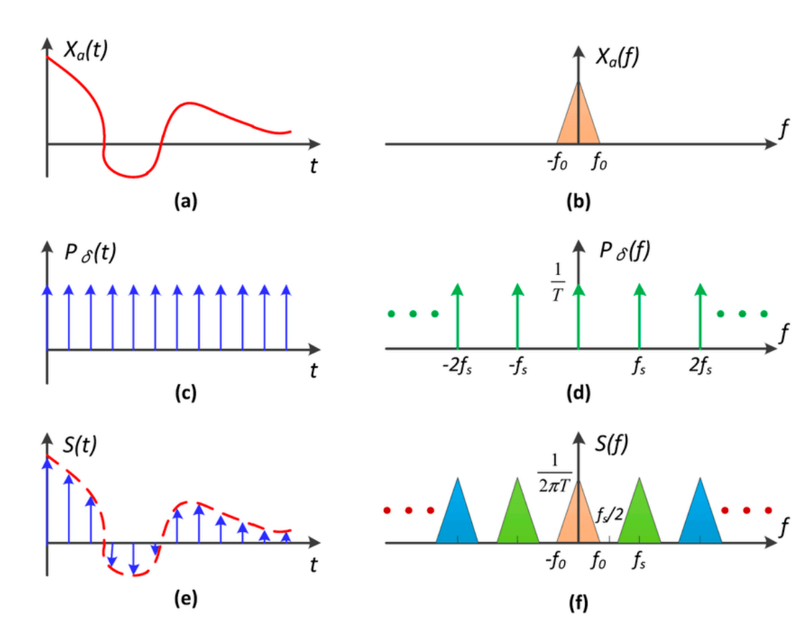
Aliasing = Mixed Frequency Contents 混叠 = 混合频率内容（这是不好的）
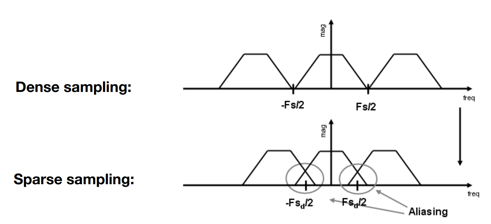
Antialiasing 抗锯齿
How Can We Reduce Aliasing Error? 如何减少混叠错误？
Option 1: Increase sampling rate 选项 1：提高采样率
Essentially increasing the distance between replicas in the Fourier domain
本质上增加了傅立叶域中副本之间的距离
Higher resolution displays, sensors, framebuffers…
更高分辨率的显示器、传感器、帧缓冲区…
But: costly & may need very high resolution
但是：成本高昂，可能需要非常高的分辨率
Option 2: Antialiasing 选项 2：消除混叠
Making Fourier contents “narrower” before repeating
在重复之前使傅立叶内容“变窄”
i.e. Filtering out high frequencies before sampling
即在采样前滤除高频
Antialiasing = Limiting, then repeating 抗锯齿=限制，然后重复

Antialiasing By Averaging Values in Pixel Area 通过平均像素区域中的值消除混叠
Solution: 解决方案：
Convolve $f(x,y)$ by a 1-pixel box-blur
通过1像素框模糊对f（x，y）进行卷积
Recall: convolving = filtering = averaging
回想：卷积 = 滤波 = 平均
Then sample at every pixel’s center
然后在每个像素的中心进行采样
Antialiasing by Computing Average Pixel Value 通过计算平均像素值消除混叠
In rasterizing one triangle, the average value inside a pixel area of $f(x,y) = inside(triangle,x,y)$ is equal to the area of the pixel covered by the triangle.
在光栅化一个三角形时，$f(x,y) = inside(triangle,x,y)$ 的像素区域内的平均值等于三角形覆盖的像素的面积。

Antialiasing By Supersampling (MSAA) 通过超级采样消除混叠（MSAA）
Supersampling 超采样
Approximate the effect of the 1-pixel box filter by sampling multiple locations within a pixel and averaging their values:
通过对一个像素内的多个位置进行采样并对其值取平均值来近似 1 像素盒滤波器的效果：
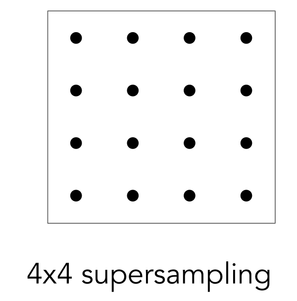
Take $N\times N$ samples in each pixel.
在每个像素中取 $N\times N$ 个样本。
Average the $N\times N$ samples “inside” each pixel.
平均每个像素“内部”的 $N\times N$ 个样本。
This is the corresponding signal emitted by the display
最终结果如下：

Antialiasing Today 现在消除混叠的方法
No free lunch!
What’s the cost of MSAA?
MSAA的代价是什么？更高的计算量
Milestones (personal idea)
FXAA (Fast Ap proximate AA)
基于图像后处理的抗锯齿算法
TAA (Temporal AA)
基于时序的抗锯齿算法
Super resolution / super sampling 超分辨率/超采样
From low resolution to high resolution
从低分辨率到高分辨率
Essentially still “not enough samples” problem
本质上仍然存在“样本不足”的问题
DLSS (Deep Learning Super Sampling)
DLSS（深度学习超级采样）
HW2
在上次作业中，虽然我们在屏幕上画出一个线框三角形，但这看起来并不是那么的有趣。所以这一次我们继续推进一步——在屏幕上画出一个实心三角形，换言之，栅格化一个三角形。上一次作业中，在视口变化之后，我们调用了函数
rasterize_wireframe(const Triangle& t)。但这一次，你需要自己填写并调用函数rasterize_triangle(const Triangle& t)。
该函数的内部工作流程如下：
创建三角形的 2 维 bounding box。
遍历此 bounding box 内的所有像素（使用其整数索引）。然后，使用像素中心的屏幕空间坐标来检查中心点是否在三角形内。
如果在内部，则将其位置处的插值深度值 (interpolated depth value) 与深度缓冲区 (depth buffer) 中的相应值进行比较。
如果当前点更靠近相机，请设置像素颜色并更新深度缓冲区 (depth buffer)。
你需要修改的函数如下：
rasterize_triangle(): 执行三角形栅格化算法static bool insideTriangle(): 测试点是否在三角形内。你可以修改此函数的定义，这意味着，你可以按照自己的方式更新返回类型或函数参数。
因为我们只知道三角形三个顶点处的深度值，所以对于三角形内部的像素，我们需要用插值的方法得到其深度值。我们已经为你处理好了这一部分，因为有关这方面的内容尚未在课程中涉及。插值的深度值被储存在变量z_interpolated中。
rasterize_triangle(): 执行三角形栅格化算法
|
static bool insideTriangle(): 测试点是否在三角形内
要使用向量的叉乘来判断一个点是否在三角形内部，可以按照以下步骤进行：
- 假设有一个三角形，其中包含三个顶点 A、B 和 C。
- 给定一个待检测的点 P。
- 使用向量 AB 和向量 AP 进行叉乘，并计算得到叉乘结果 cross1。
- 使用向量 BC 和向量 BP 进行叉乘，并计算得到叉乘结果 cross2。
- 使用向量 CA 和向量 CP 进行叉乘，并计算得到叉乘结果 cross3。
- 检查 cross1、cross2 和 cross3 的符号。如果它们都具有相同的符号（正数或负数），则点 P 在三角形的内部。否则，点 P 不在三角形的内部。
具体来说，可以使用右手法则来确定向量的方向。对于跨越的两条边（例如 AB 和 AP），将右手的拇指指向第一条边（AB），食指指向第二条边（AP）。如果中指指向了背离三角形平面的方向，则叉乘结果为负数。如果中指指向了朝向三角形平面的方向，则叉乘结果为正数。
这种方法基于向量的叉乘性质，通过检查叉乘结果的符号来判断点 P 是否在三角形内部。如果叉乘结果都具有相同的符号，那么点 P 在三角形的同一侧，即在三角形内部。如果叉乘结果具有不同的符号，那么点 P 在三角形的两侧，即不在三角形内部。
请注意，这种方法只适用于点和三角形都位于同一平面上的情况。
|
$2\times2$ MSAA：
|